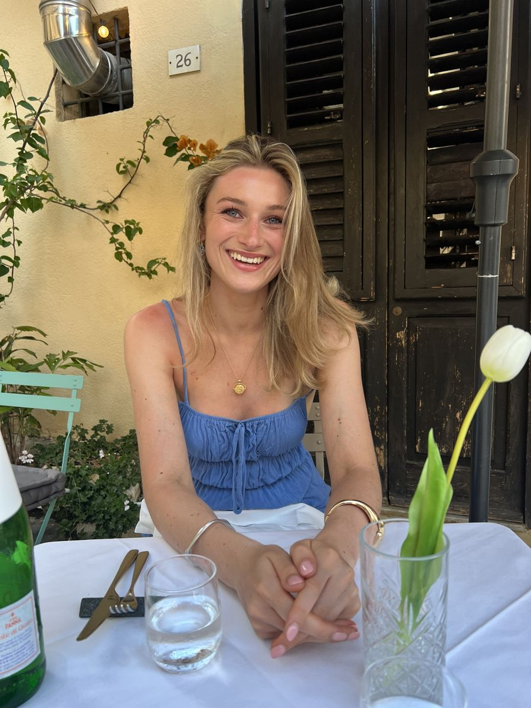
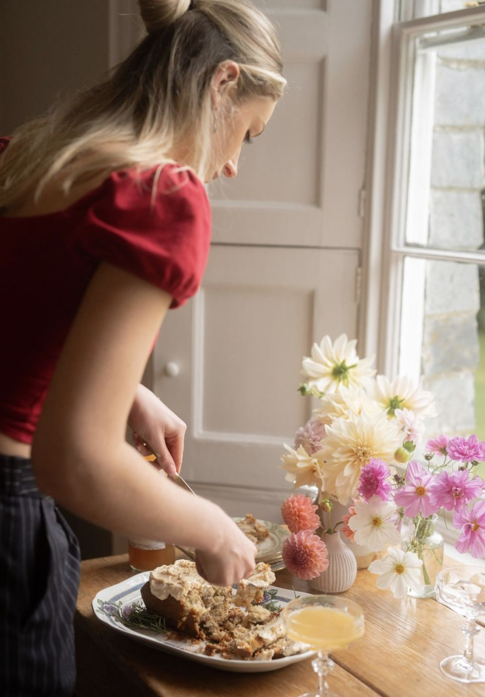
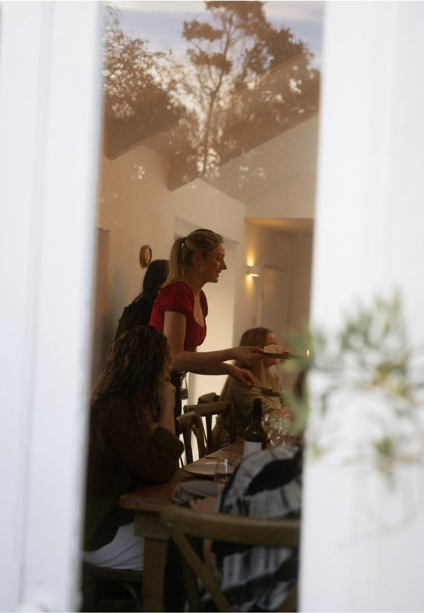
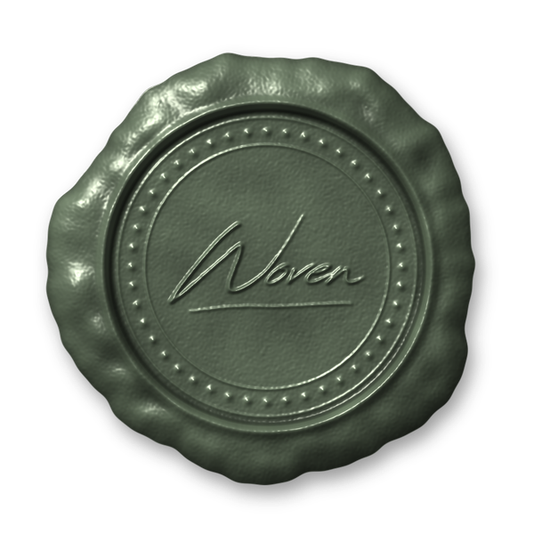

About
Wedding and event coordinator, founder of WOVEN, and happiest when a room full of people forgets to check the time.

My story
I started at a wedding venue in 2019 as a kitchen assistant, finishing my Leiths certificate in food and wine alongside my A-levels, and I never left. I was fascinated by how weddings bring people together: friends, family and strangers becoming a community for one day.
Over time I moved from the kitchen to front of house, and that's when everything shifted. I was shy at first, but the more I engaged with people, the more alive I became. I learned to read people, their needs, their worries, what would make them feel held.
I worked my way up to head of kitchen, but I realised my passion wasn't cooking. It was people. I studied events management at university, coordinated weddings through my summers, then moved into retreat coordination. The pattern stayed the same: I was drawn to the intimate, personal side of events. The moments that matter.
I'm a bit of a paradox: chaotic and creative in my personal life, methodically organised in my work. That combination lets me see the whole vision and carry every detail through. That's what led to WOVEN.
Zoë
What I bring
I've worked in the kitchen, front of house, coordinating on the day and creating content. I know what a caterer needs at 4pm, how a photographer works a room, and what makes guests feel looked after.
Most of all, I notice people. Who's nervous, who needs a moment, when to step in and when to step back. You get someone organised enough to trust completely, and personal enough that you never feel like a booking.
My philosophy

